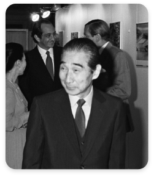
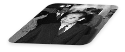
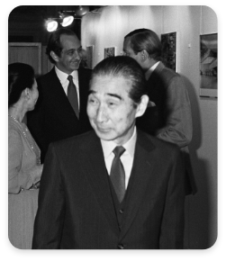
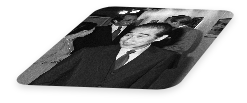
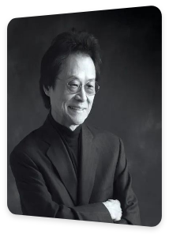
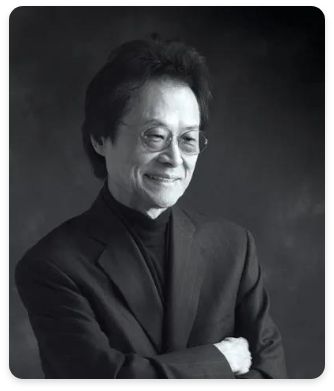
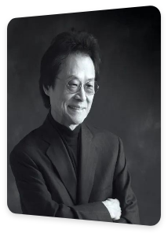
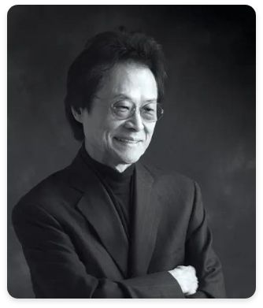

Kenzo Tange
(4 September 1913 - 22 March 2005) was a Japanese architect, and winner of the 1987 Prizker Prize for architecture.
 



Kisho Kurokawa
(April 8, 1934 - October 12, 2007) was a leading Japanese architect and one of the founders of the Metabolist Movement.